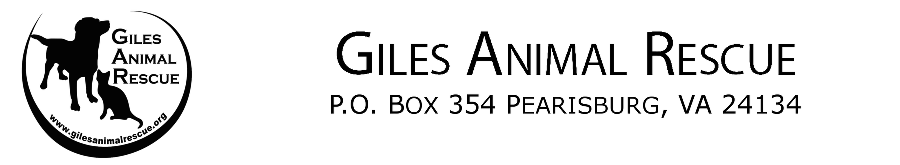

Mongomery County Humane Society
This organization is based in Christiansburg. Their website contains information ranging from how to apply to volunteer, available animals, information on their spay/neuter program, and an informative FAQ. Giles Animal Rescue
Located in Pearisburg, their website hosts a variety of features, including their success stories, donation information, adoptable animals, and even lost and found animals.Animal Welfare Foster Program
This is where our mascot, Ruby, came from! Based in Blacksburg, this organization rescues dogs and cats from local shelters that are at capacity and places them with their wonderful fosters. Their website contains information on donations and volunteering, the adoption application and process, and the available dogs and cats.